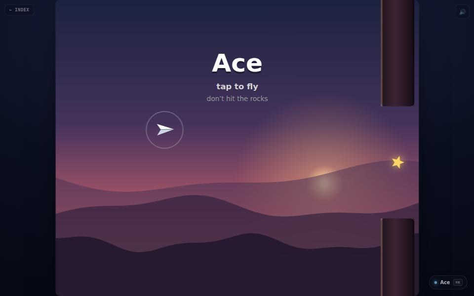

game · about 2 min · The Playground Reef
Ace
Tap to fly a paper plane through a canyon. Do not hit the rocks.

The problem
A game that has to be explained has already failed.
What it does
- One button, no menu, no tutorial
- A fixed timestep, so speed does not depend on the screen
- A backgrounded tab does not kill your run
The most interesting decision
Deterministic
The same seed and the same taps give exactly the same run every time, because the rocks come from a seeded generator rather than Math.random.
Built with
- Canvas 2D
- Web Audio
- One button
Evidence
No menu, no settings, no tutorial. Read its tests
Its world
Two canyon spires and a paper plane that has not hit them yet.